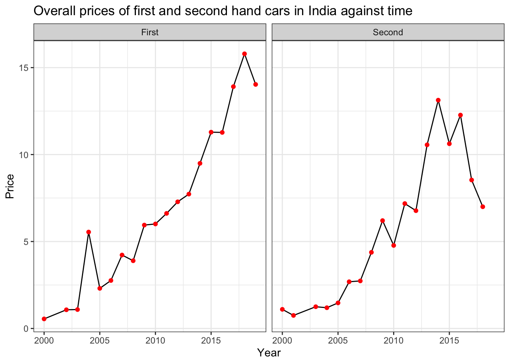
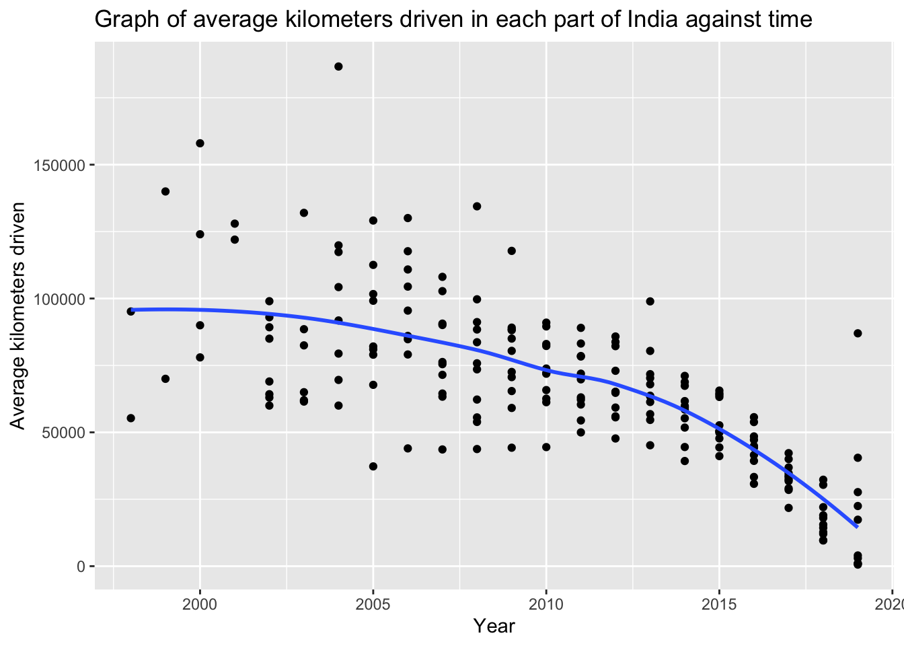
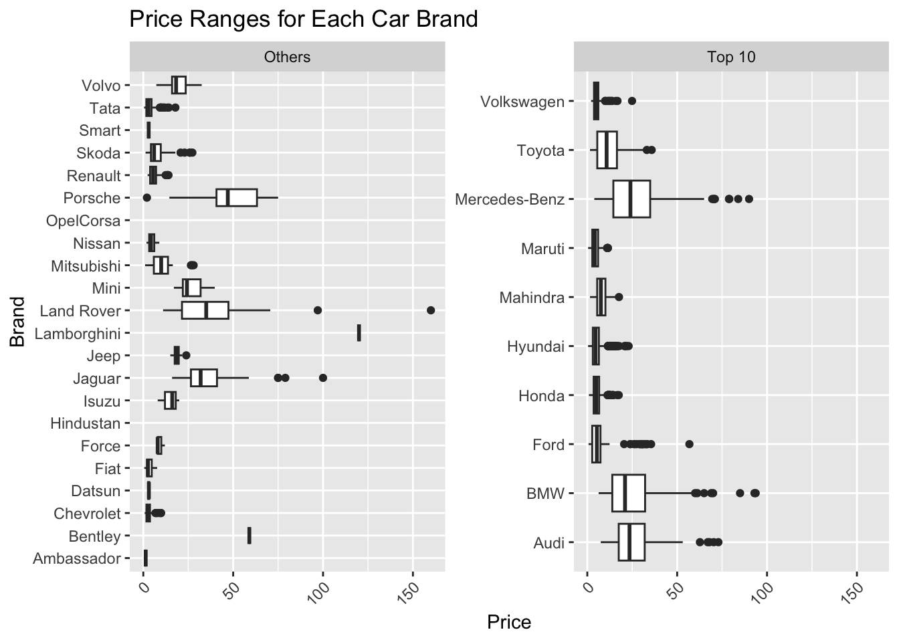

. Brand & Model
. Location: Certain cities in India
. Year
. Kilometers driven
. Fuel type
. Transmission type
. Owner type
. Mileage: How many kilometers the vehicle can travel per litre of fuel
. Engine: Measured in cubic capacity (CC). It refers to the amount of air and fuel that can be pushed through the cylinders in the engine. In most cases, the bigger the capacity, the more powerful the vehicle.
. Power: Measured in brake horsepower (BHP). It refers to the horsepower of the car after accounting for the frictional losses in power from the engine. Generally, a higher BHP means increased speed, strength, and overall capabilities on the road.
. Number of seats
. Price: 1 Lakh = 100,000About
Welcome again!
Stay tuned to see what I will be doing…
Dataset
For my analysis, I will be looking at a dataset about cars that was found on Kaggle: https://www.kaggle.com/datasets/ayushparwal2026/cars-dataset.
Title: Cars Dataset
Description: The Cars Dataset contains information about various car models, including their specifications and pricing details in certain parts of India. It a collection of attributes related to different car models, possibly intended for analysis, modeling, or machine learning tasks related to the automotive industry.
Attributes:
Potential Use Cases: This dataset could be used for various analytical purposes, including:
. Exploratory data analysis (EDA) to understand trends and patterns in the automotive market.
. Predictive modeling to estimate car prices based on their specifications.
. Classification tasks to predict car types or fuel efficiency based on attributes.
. Market research to understand consumer preferences and buying behavior in the automotive industry.
. Academic research in fields like transportation engineering, automotive engineering, data science, and machine learning.
. Product development
. Risk assessment── Attaching core tidyverse packages ──────────────────────── tidyverse 2.0.0 ──
✔ dplyr 1.1.2 ✔ readr 2.1.4
✔ forcats 1.0.0 ✔ stringr 1.5.1
✔ ggplot2 3.4.4 ✔ tibble 3.2.1
✔ lubridate 1.9.2 ✔ tidyr 1.3.0
✔ purrr 1.0.2
── Conflicts ────────────────────────────────────────── tidyverse_conflicts() ──
✖ dplyr::filter() masks stats::filter()
✖ dplyr::lag() masks stats::lag()
ℹ Use the conflicted package (<http://conflicted.r-lib.org/>) to force all conflicts to become errorsRows: 7,253
Columns: 14
$ S.No. <int> 0, 1, 2, 3, 4, 5, 6, 7, 8, 9, 10, 11, 12, 13, 14, 15…
$ Name <chr> "Maruti Wagon R LXI CNG", "Hyundai Creta 1.6 CRDi SX…
$ Location <chr> "Mumbai", "Pune", "Chennai", "Chennai", "Coimbatore"…
$ Year <int> 2010, 2015, 2011, 2012, 2013, 2012, 2013, 2016, 2013…
$ Kilometers_Driven <int> 72000, 41000, 46000, 87000, 40670, 75000, 86999, 360…
$ Fuel_Type <chr> "CNG", "Diesel", "Petrol", "Diesel", "Diesel", "LPG"…
$ Transmission <chr> "Manual", "Manual", "Manual", "Manual", "Automatic",…
$ Owner_Type <chr> "First", "First", "First", "First", "Second", "First…
$ Mileage <chr> "26.6 km/kg", "19.67 kmpl", "18.2 kmpl", "20.77 kmpl…
$ Engine <chr> "998 CC", "1582 CC", "1199 CC", "1248 CC", "1968 CC"…
$ Power <chr> "58.16 bhp", "126.2 bhp", "88.7 bhp", "88.76 bhp", "…
$ Seats <int> 5, 5, 5, 7, 5, 5, 5, 8, 5, 5, 5, 5, 5, 5, 5, 7, 5, 5…
$ New_Price <chr> "", "", "8.61 Lakh", "", "", "", "", "21 Lakh", "", …
$ Price <dbl> 1.75, 12.50, 4.50, 6.00, 17.74, 2.35, 3.50, 17.50, 5…Tidying data
Warning: Expected 2 pieces. Missing pieces filled with `NA` in 2 rows [4447,
4905].Warning: There was 1 warning in `mutate()`.
ℹ In argument: `Power/bhp = as.numeric(str_remove(Power, "bhp"))`.
Caused by warning:
! NAs introduced by coercionRows: 7,253
Columns: 16
$ Brand <chr> "Maruti", "Hyundai", "Honda", "Maruti", "Audi", "Hyu…
$ Model <chr> "Wagon R LXI CNG", "Creta 1.6 CRDi SX Option", "Jazz…
$ Location <chr> "Mumbai", "Pune", "Chennai", "Chennai", "Coimbatore"…
$ Year <int> 2010, 2015, 2011, 2012, 2013, 2012, 2013, 2016, 2013…
$ Car_age <dbl> 14, 9, 13, 12, 11, 12, 11, 8, 11, 12, 6, 12, 9, 10, …
$ Kilometers_Driven <int> 72000, 41000, 46000, 87000, 40670, 75000, 86999, 360…
$ Fuel_Type <chr> "CNG", "Diesel", "Petrol", "Diesel", "Diesel", "LPG"…
$ Transmission <chr> "Manual", "Manual", "Manual", "Manual", "Automatic",…
$ Owner_Type <chr> "First", "First", "First", "First", "Second", "First…
$ Mileage_value <dbl> 26.60, 19.67, 18.20, 20.77, 15.20, 21.10, 23.08, 11.…
$ Mileage_unit <chr> "km/kg", "kmpl", "kmpl", "kmpl", "kmpl", "km/kg", "k…
$ `Engine/CC` <dbl> 998, 1582, 1199, 1248, 1968, 814, 1461, 2755, 1598, …
$ `Power/bhp` <dbl> 58.16, 126.20, 88.70, 88.76, 140.80, 55.20, 63.10, 1…
$ Seats <int> 5, 5, 5, 7, 5, 5, 5, 8, 5, 5, 5, 5, 5, 5, 5, 7, 5, 5…
$ New_Price <chr> "", "", "8.61 Lakh", "", "", "", "", "21 Lakh", "", …
$ Price <dbl> 1.75, 12.50, 4.50, 6.00, 17.74, 2.35, 3.50, 17.50, 5…Analysis (summary)
Brand Model Location Year
Length:7253 Length:7253 Length:7253 Min. :1996
Class :character Class :character Class :character 1st Qu.:2011
Mode :character Mode :character Mode :character Median :2014
Mean :2013
3rd Qu.:2016
Max. :2019
Car_age Kilometers_Driven Fuel_Type Transmission
Min. : 5.00 Min. : 171 Length:7253 Length:7253
1st Qu.: 8.00 1st Qu.: 34000 Class :character Class :character
Median :10.00 Median : 53416 Mode :character Mode :character
Mean :10.63 Mean : 58699
3rd Qu.:13.00 3rd Qu.: 73000
Max. :28.00 Max. :6500000
Owner_Type Mileage_value Mileage_unit Engine/CC
Length:7253 Min. : 0.00 Length:7253 Min. : 72
Class :character 1st Qu.:15.17 Class :character 1st Qu.:1198
Mode :character Median :18.16 Mode :character Median :1493
Mean :18.14 Mean :1617
3rd Qu.:21.10 3rd Qu.:1968
Max. :33.54 Max. :5998
NA's :2 NA's :46
Power/bhp Seats New_Price Price
Min. : 34.2 Min. : 0.00 Length:7253 Min. : 0.44
1st Qu.: 75.0 1st Qu.: 5.00 Class :character 1st Qu.: 3.50
Median : 94.0 Median : 5.00 Mode :character Median : 5.64
Mean :112.8 Mean : 5.28 Mean : 9.48
3rd Qu.:138.1 3rd Qu.: 5.00 3rd Qu.: 9.95
Max. :616.0 Max. :10.00 Max. :160.00
NA's :175 NA's :53 NA's :1234 Background into India’s car market
When it comes to buying a new car, Indian consumers will root more for mileage than engine power. 60% of buyers want a fuel-efficient car (can be seen through high mileage) and 72% are looking to save money. Indian customers are seriously worried about fluctuating fuel prices and a good 60% don’t expect fuel price stability in the next 12 months (from August 2023). They believe that fuel prices will remain too high hence the choice for a fuel-efficient car to save fuel costs.
Also many of the bigger cities in this region boast 100 million plus population so congestion is a problem. People are realising that power packed vehicles cannot be driven in the cities in this region hence the focus on fuel efficiency.
The lemon market in India is a huge problem due to information asymmetry between buyers and sellers. This asymmetry means that buyers are unable to access sufficient vehicle information, enabling sellers to exploit uninformed buyers by selling lower-quality cars. In summary, market failure (distortions in true value of the product) caused by adverse selection and moral hazard is a significant problem for many innocent buyers in India where cost is an influential factor in decision-making.
Links for reference: https://auto.economictimes.indiatimes.com/news/industry/what-indian-consumers-prefer-the-most-while-buying-a-car/53825945
https://www.atlantis-press.com/article/125971556.pdf
1. Lemon market: How high are the prices of second-hand cars in India?
`summarise()` has grouped output by 'Location'. You can override using the
`.groups` argument.
Warning: There was 1 warning in `filter()`.
ℹ In argument: `Owner_Type == c("First", "Second")`.
Caused by warning in `Owner_Type == c("First", "Second")`:
! longer object length is not a multiple of shorter object length`summarise()` has grouped output by 'Year'. You can override using the
`.groups` argument.
There has been an increase in second-hand car prices till 2017 (though this may vary, eg. Bangladore and Delhi experienced increases earlier) but seems to be mostly coming down after that. Perhaps the problem of the lemon market is slowly being alleviated as the difference in first and second hand car prices are increasing.
2. Carbon emissions? Average kilometers driven in India
One outlier from Chennai removed
`summarise()` has grouped output by 'Year'. You can override using the
`.groups` argument.
`geom_smooth()` using method = 'loess' and formula = 'y ~ x'
3. Preferences and car usage in India


Warning: Removed 1234 rows containing non-finite values (`stat_boxplot()`).
Maruti seems to be the most popular car brand that Indian consumers go for. Upon further inspection into the prices of the individual car brands, we seem to see a preference for the lowest costing car (Maruti) among the top 10.

- Preferences for low costs, 5-seater vehicles, lower power and engine vehicles.
- Automatic cars seem to have higher power and engine than manual cars –> More may opt for manual cars since they are of lower power and engine.
- Cars in India do not travel very long distances.
- Most of the histograms are highly skewed, which may lead to some poor performances of certain models.
4. Predictors in the market

Strongest correlation between the power and engine capacity of a car.
There is a strong correlation between costs and power of the car –> the higher the BHP, the higher the costs of the car which matches what vehicle analytics say. However, since customers in India tend to go for lower prices, producers need not create so many high-powered cars. Moreover, India’s cities are known for their traffic congestion thus smaller, less powerful engines are practical for navigating these conditions efficient.
Relationship of price and engine of a car is also moderately strong. This seems to be in line with India’s taxation policies: they impose higher taxes on cars with larger engines and as a result higher BHP, making such vehicles much more unafforable.
Link for reference: https://www.cars24.com/blog/what-is-bhp-in-cars/